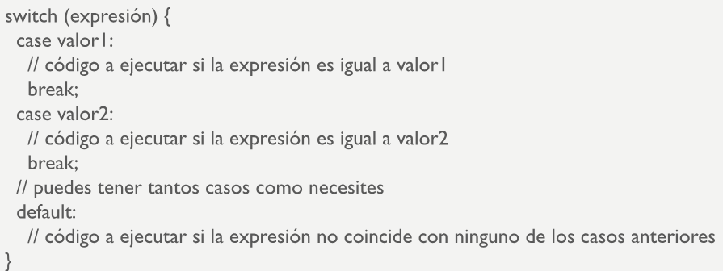

Condicionales
Nos permiten tomar decisiones en función de valores Booleanos (true o false)
If Else

Si se cumple una condición, se procede a ejecutar una parte del código. Si no se cumple,
procede a ejecutarse la parte del código que esta dentro del Else. Aunque este último es opcional.
Operador ternario
Es una forma de pensar el condicional IF ELSE. Consiste de 3 partes, la condición y dos resultado en caso de que uno sea positivio o negativo.
Switch

El switch ejecuta un bloque de codigo asociado a una expresión, solo si esta coincide con la expresiónque se le pasa.
Ciclos
Los ciclos nos permiten ejecutar bloques de código repetidamente mientras se cumpla una condicón
while
El bucle while, va a repetir un bloque de código mientras que la condición que le pasemos siga siendo verdadera
do...while
Funciona simular al While, pero esta vez garantiza que una parte del código se ejecute, antes de evaluar la condición.
For
Es utilizado para iterar sobre una secuencia de valores. Se compone de 3 partes, inicialización, condición, expresión de actualización.
For...of
Se utiliza para recorrer elementos iterables, como las cadenas de texto, los arreglos y otros objetos con un iterador.
For...in
Sirve para recorrer sobre las propiedades enumerables de un objeto.
Control de bucles
La declaración break se utiliza para salir de un bucle antes de que se completen todas las iteracciones.
La declaración continue se utiliza para saltar a la siguiente iteración del bucle, omitiendo el resto del código en la iteración actual.